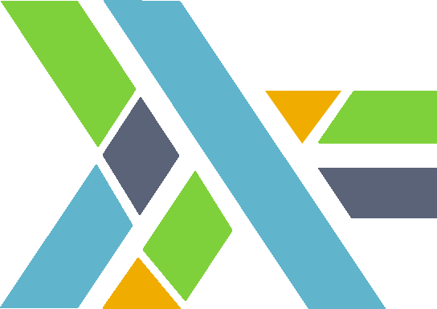

Haskell for Elm developers: giving names to stuff (Part 7 - Traversable)

Welcome back! In my last post, we explored the Foldable typeclass and how it showed up everywhere in Elm. And if you were paying attention, I teased at the very end that the next topic would be… Traversable! 🎉
Today’s topic is one of my personal favourites and — spoiler alert ⚠️ — it is something you have absolutely been using in Elm all along!
A familiar pattern
Before we dive into the typeclass definition, let me show you some Elm code that might look familiar. Have you ever used the elmcraft/core-extra package? It has a pair of very handy functions:
{-| Combine a list of maybes into a single maybe (holding a list).
-}
combine : List (Maybe a) -> Maybe (List a)
{-| Map a function producing maybes on a list
and combine those into a single maybe (holding a list).
Also known as `traverse` on lists.
combineMap f xs == combine (List.map f xs)
-}
combineMap : (a -> Maybe b) -> List a -> Maybe (List b)
combineMap f =
combine << List.map fThe idea is simple but incredibly powerful: you have a list of inputs, a function that processes each input individually into a Maybe, and you want to get back a single Maybe holding a list — or Nothing if anything goes wrong along the way.
combineMap String.toInt [ "1", "2", "3" ]
-- > Just [1, 2, 3]
combineMap String.toInt [ "1", "oops", "3" ]
-- > NothingWell, this pattern of exchanging the positions of two type constructors has a name, and that name is traverse! 🤓
What is Traversable?
Here is how the Traversable typeclass is defined in Haskell:
class (Functor t, Foldable t) => Traversable t where
{-# MINIMAL traverse | sequenceA #-}
traverse :: Applicative f => (a -> f b) -> t a -> f (t b)
traverse f = sequenceA . fmap f
sequenceA :: Applicative f => t (f a) -> f (t a)
sequenceA = traverse idThere is quite a lot to unpack here, so let us go through it step by step.
First, notice the typeclass constraints: Functor t, Foldable t. The Functor one is easy to spot — traverse f = sequenceA . fmap f uses fmap directly. But why Foldable? Because every Traversable is automatically a Foldable: if you can traverse a structure running effects, you can certainly fold it too — just use an applicative that ignores the “shape-preserving” part and only accumulates values. In fact, foldMap is always derivable from traverse, which is why Haskell requires Foldable as a superclass: to make that relationship explicit rather than leaving it implicit. 🧩
You can think of Traversable as the typeclass that lets you visit every element of a structure, run an effect on each one, and get back the same structure with all the results — but with the effect pulled out to the top. 🏗️
Second, notice the MINIMAL pragma: you only need to implement either traverse or sequenceA, and you get the other for free, since they are defined in terms of each other!
Now let us look at traverse more closely:
traverse :: (Traversable t, Applicative f) => (a -> f b) -> t a -> f (t b)Does that type signature look familiar? Compare it with our Elm combineMap:
traverse :: Applicative f => (a -> f b) -> t a -> f (t b)
combineMap : (a -> Maybe b) -> List a -> Maybe (List b)combineMap is just traverse specialised to List as the container (t) and Maybe as the applicative effect (f)! 🤯🤯🤯
sequenceA / sequence: flipping the types
Now let us talk about sequenceA, and its older sibling sequence from the Haskell Prelude:
sequenceA :: (Traversable t, Applicative f) => t (f a) -> f (t a)
sequence :: (Traversable t, Monad m) => t (m a) -> m (t a)The intuition here is beautiful: sequenceA flips the types around, turning t (f a) into f (t a). In plain words: it takes “a list of Results” and turns it into “a Result of a list”:
>>> sequenceA [Just 1, Just 2, Just 3]
Just [1,2,3]
>>> sequenceA [Just 1, Nothing, Just 3]
Nothing
>>> sequenceA [Right 1, Right 2, Right 3]
Right [1,2,3]
>>> sequenceA [Right 1, Left "oops", Right 3]
Left "oops"And notice how combine from Elm’s core-extra is exactly this, specialised to Maybe:
sequenceA :: Applicative f => [f a] -> f [a]
combine : List (Maybe a) -> Maybe (List a)YOU HAVE BEEN USING sequenceA ALL ALONG! 🥁🥁🥁
Now, sequence (the Monad variant) is what you see in the Elm Task.sequence documentation:
sequence : List (Task x a) -> Task x (List a)This is exactly sequence from Haskell, specialised to Task! You give it a list of tasks, and it runs them one by one, collecting all the results into a single Task wrapping a list. If any task fails, the whole thing short-circuits. The relationship is exactly the same as between combine and combineMap:
traverse f = sequenceA . fmap f -- like: combineMap f = combine << List.map f
sequenceA = traverse id -- like: combine = combineMap identitySame pattern, just finally given its proper name. ✨
A real-world Elm example
A great practical example of where traverse shows up in the wild is in elm-review. Imagine you have a list of fixes to apply to source code, where each fix can either succeed or fail:
compileFixes : List Fix -> Result Error (List CompiledFix)
compileFixes fixes =
Result.Extra.combineMap compileFix fixesThe pattern is precisely: list of inputs + function that processes each input individually into a result → result holding a list, or an error if it happened anywhere. traverse in a nutshell! 🎯
Implementing Traversable for a custom type
Let’s see how easy it is to implement Traversable for a custom Haskell type. Recall our binary tree from the previous post:
data Tree a
= Leaf
| Node (Tree a) a (Tree a)
deriving (Functor, Foldable)Adding a Traversable instance is beautifully simple:
instance Traversable Tree where
traverse _ Leaf = pure Leaf
traverse f (Node l x r) = Node <$> traverse f l <*> f x <*> traverse f rLook at that! We are using <$> (fmap) and <*> (from Applicative). That is why Traversable requires Functor: we need to lift the Node constructor into the applicative context and then apply it to each traversed branch. 🧠
Or, if we enable the language extensions, we can derive everything automatically:
{-# language DeriveFunctor, DeriveFoldable, DeriveTraversable #-}
data Tree a
= Leaf
| Node (Tree a) a (Tree a)
deriving (Functor, Foldable, Traversable)And now we can traverse over trees with any Applicative effect:
>>> traverse (\x -> if x > 0 then Just x else Nothing) (Node (Node Leaf 1 Leaf) 2 (Node Leaf 3 Leaf))
Just (Node (Node Leaf 1 Leaf) 2 (Node Leaf 3 Leaf))
>>> traverse (\x -> if x > 0 then Just x else Nothing) (Node (Node Leaf (-1) Leaf) 2 (Node Leaf 3 Leaf))
NothingA useful derived function: for
Haskell also provides a convenience function called for, which is just traverse with its arguments flipped:
for :: (Traversable t, Applicative f) => t a -> (a -> f b) -> f (t b)
for = flip traverseThis is handy when you want to write the data first and the function second, which sometimes reads more naturally:
-- traverse: function first, data second
traverse validatePositive [1, 2, 3]
-- for: data first, function second (feels more like Elm's `|>`!)
for [1, 2, 3] validatePositiveAnd of course, there are also forM (the Monad version), mapM and others — but they are all just specialised or flipped variants of the same idea. 😊
Bonus: collecting ALL errors 🎁
At this point, a very curious reader might ask: “What if I want to collect ALL the errors, not just the first one? Like, end up with Result (List err) (List ok)?”
This is a fantastic question! With plain Result / Either, traverse short-circuits on the very first error and does not process the rest. This is because Either is a Monad, and the sequential nature of monads means they cannot accumulate errors.
To collect all errors, we need a different type. In Haskell, that type is Validation from the validation package:
data Validation e a
= Failure e
| Success aThe key insight is: Validation is an Applicative but NOT a Monad! And that is precisely what enables error accumulation. Since traverse only requires an Applicative constraint (not a Monad one), you can plug Validation in and watch it collect all failures:
import Data.Validation
validatePositive :: Int -> Validation [String] Int
validatePositive x
| x > 0 = Success x
| otherwise = Failure ["Expected a positive number, got: " <> show x]
>>> traverse validatePositive [1, 2, 3]
Success [1,2,3]
>>> traverse validatePositive [1, -2, 3, -4]
Failure ["Expected a positive number, got: -2","Expected a positive number, got: -4"]ALL errors are accumulated! 🎉
This is one of those beautiful insights that emerge from the typeclass hierarchy: whether you short-circuit or accumulate errors is not a property of traverse itself, but of the Applicative you use with it! ✨
In Elm, Result always short-circuits (it behaves like a Monad), so to accumulate errors you would need a custom type similar to Validation. Some community packages take this approach for form validation. But this also reveals why such a type does not exist in elm/core — it is a fundamentally different beast from Result, since it cannot support andThen / monadic chaining.
The typeclass hierarchy
Let us take a moment to appreciate how Traversable fits into the bigger picture:
Functor Foldable
(can map over structure) (can collapse structure, forgetting shape)
| |
+------------+---------------+
|
Traversable (can traverse with effects, preserving shape)Traversable sits right at the intersection of Functor and Foldable, but adds something neither of them can do alone: running effects while preserving the container shape. If Foldable says “I can visit all elements and forget the structure”, Traversable says “I can visit all elements, run an effect on each, and remember the structure”. The extra power comes from the Applicative constraint on f. 🏆
It is always traverse! 🕵️♂️
There is an old Haskell saying: “The answer is always monads.” But in my experience, once you have learned traverse, a new truth reveals itself: the answer is always traverse! 😄
JSON decoders? traverse. Form validation? traverse. Running a list of tasks? That is sequence, which is just traverse id. Applying a list of fixes? Also traverse. Even the humble combineMap you have been writing in Elm? traverse.
Once you see it, you cannot unsee it. You are welcome. 🙃
Acknowledgements
Many thanks to @jfmengels for the real-world elm-review inspiration, and to @janiczek for asking the excellent question about collecting all errors — both made this post much richer! 🙏🏻
Special thanks as always to @serras for technical proofreading. 🙏🏻
Hope you enjoyed learning about Traversable — it is one of those typeclasses that once you see it, you start noticing it everywhere! 😄 If you found joy in this blogpost and would like me to continue the series, please consider sponsoring my work, share it in your social networks and follow me on Twitter/BlueSky! 🦋 🙌🏻